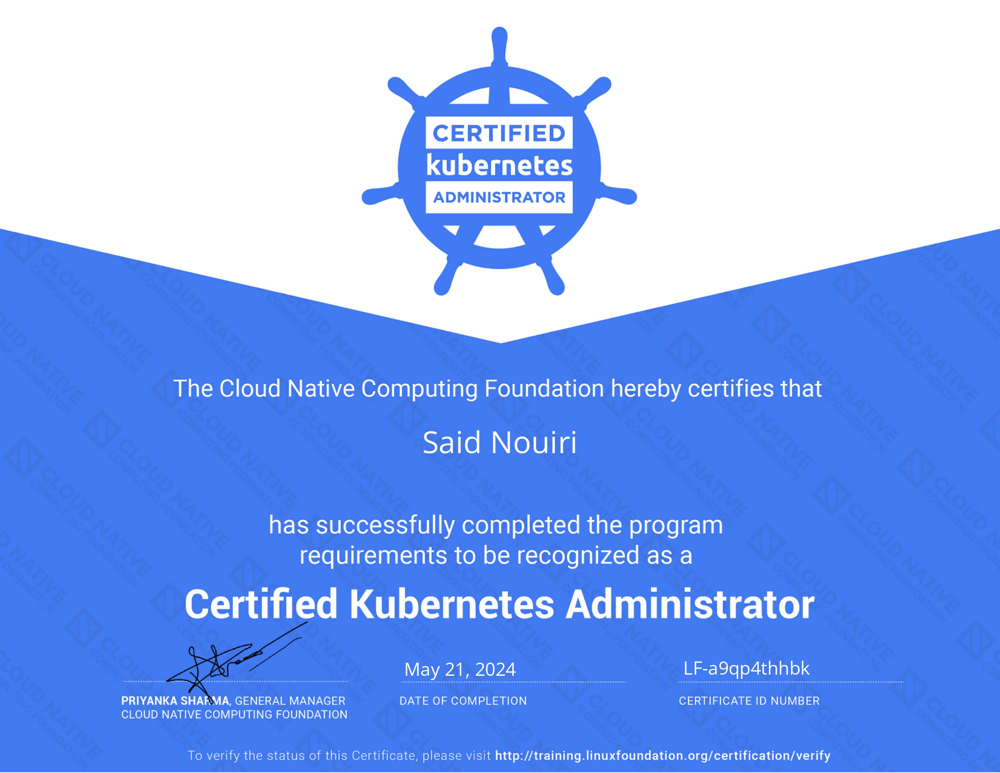
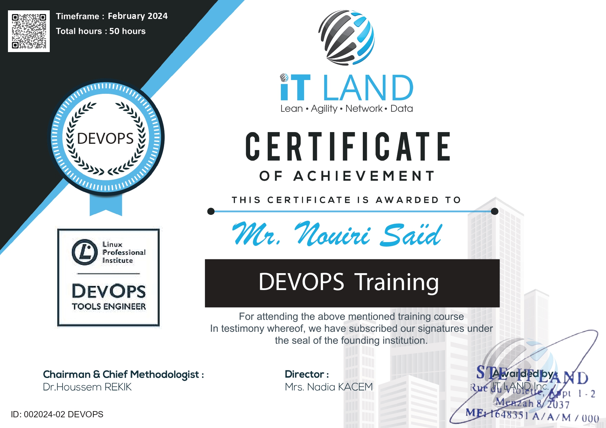

<div class="align-items-center default-container">
    <div class="col-lg-8">
        <div class="content">
            <div class="content-left">
                <h2 class="default-topic">About me.</h2>
                <p class="default-p">
                    My name is Said Nouiri, and I enjoy <span class="default-highlight">creating efficient DevOps
                        solutions</span>.
                </p>
                <p class="default-p">
                    I am a DevOps Engineer from Tunisia. Arabic is my native language, and I am proficient in both
                    French and English.
                </p>
                <p class="default-p">My journey in technology began with my studies in <span
                        class="default-highlight">Embedded Systems</span>,
                    where I worked on innovative projects like developing <span class="default-highlight">smart glasses
                        for the visually impaired</span>
                    and creating <span class="default-highlight">intelligent refrigeration systems</span>. These
                    experiences taught me the importance of
                    <span class="default-highlight">combining hardware and software solutions</span> to solve real-world
                    problems.
                </p>
                <p class="default-p">
                    Fast-forward to today, and I've had the opportunity to work with cutting-edge DevOps technologies
                    and practices.
                </p>
                <p class="default-p">
                    I've had the chance to work with a comprehensive stack of <span class="default-highlight">DevOps
                        tools</span> and developed expertise in
                    <span class="default-highlight">containerization</span>, <span
                        class="default-highlight">automation</span>, and
                    <span class="default-highlight">monitoring</span>. My technical journey includes implementing
                    <span class="default-highlight">CI/CD pipelines</span> with GitLab, containerizing applications with
                    <span class="default-highlight">Docker</span>, and orchestrating containers with <span
                        class="default-highlight">Kubernetes</span>.
                </p>
                <p>
                    
                </p>
                <p class="default-p">
                    I've worked extensively with <span class="default-highlight">infrastructure optimization</span> and
                    <span class="default-highlight">server management</span>, particularly in OVH environments. My focus
                    has been on
                    <span class="default-highlight">maximizing performance</span> while <span
                        class="default-highlight">reducing operational costs</span>.
                </p>
                <p class="default-p">
                    I believe <span class="default-highlight">DevOps</span> plays a crucial role in enhancing
                    <span class="default-highlight">collaboration</span> between teams and improving the overall
                    <span class="default-highlight">efficiency of software delivery</span>. The optimization of
                    workflows and
                    automation of processes are key factors in project success.
                </p>
                <p class="default-p">
                    A significant milestone in my career was earning the <span class="default-highlight">CKA (Certified
                        Kubernetes Administrator)</span>
                    certification and completing the <span class="default-highlight">LPI DevOps Tools Engineer</span>
                    training. These achievements have
                    equipped me with deep knowledge in tools like <span class="default-highlight">Vagrant</span>,
                    <span class="default-highlight">Ansible</span>, <span class="default-highlight">Prometheus</span>,
                    <span class="default-highlight">ELK Stack</span>, and <span
                        class="default-highlight">Jenkins</span>.
                </p>
                <p>
                    
                </p>
                <p class="default-p">
                    I have to tell you — my passion for technology goes far beyond work. I <em>am</em> the kind of
                    person who finds joy in
                    <span class="default-highlight">solving complex infrastructure challenges</span> and
                    <span class="default-highlight">optimizing deployment pipelines</span>. It's what drove me to pursue
                    advanced certifications
                    and continuously expand my knowledge in the DevOps field.
                </p>
                <p class="default-p">
                    Now, we've covered the professional side. On a personal note, I'm passionate about
                    <span class="default-highlight">video games</span>, <span class="default-highlight">football</span>,
                    and staying updated with the latest technological advancements in the DevOps landscape.
                </p>
                <p class="default-p">
                    I am continuously learning and adapting to new technologies and methodologies. My goal is to create
                    <span class="default-highlight">efficient, automated, and scalable infrastructure solutions</span>
                    that make a
                    real difference in how organizations deploy and maintain their applications.
                </p>
                <p class="default-p">
                    Now that you've read this far, let me wrap this up with a final thought.
                </p>
                <p class="default-p">
                    Technology is constantly evolving, and DevOps practices are at the forefront of this evolution. I
                    take great pride in
                    being part of this <span class="default-highlight">technological transformation</span>.
                </p>
            </div>
            <div class="content">
                <div class="content-left">
                    <h2 class="default-topic">Reach out.</h2>
                    <p class="default-p">
                        Connect with me on <span class="default-highlight">LinkedIn</span> or reach out via email at
                        <span class="default-highlight">saidnouiri91&#64;gmail.com</span>. I would be happy to discuss
                        how
                        my <span class="default-highlight">DevOps expertise</span> can help address the challenges you
                        are
                        facing.
                    </p>

                    <button>
                        <a routerLink="/contact" class="a-green">
                            > Contact me
                        </a>
                    </button>
                </div>
            </div>
        </div>
    </div>
</div>